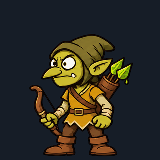

idle

8 frames · 12 fps · impact —
Frames · ReportSheet 4 cột × 512 px · #FF00FF · key_out.py và check_sheet.py nguyên bản

8 frames · 12 fps · impact —
Frames · Report12 frames · 24 fps · impact 6
Frames · Report8 frames · 24 fps · impact —
Frames · Report12 frames · 24 fps · impact 7
Frames · Report12 frames · 12 fps · impact —
Frames · Report8 frames · 12 fps · impact —
Frames · Report